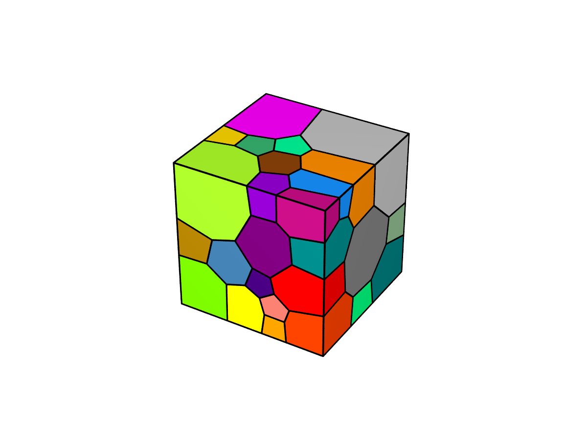
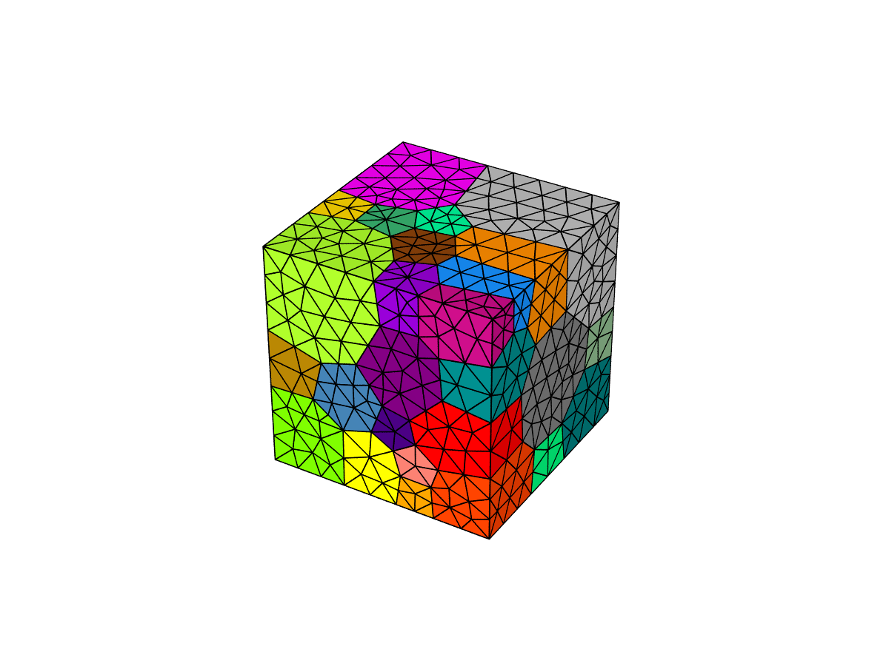
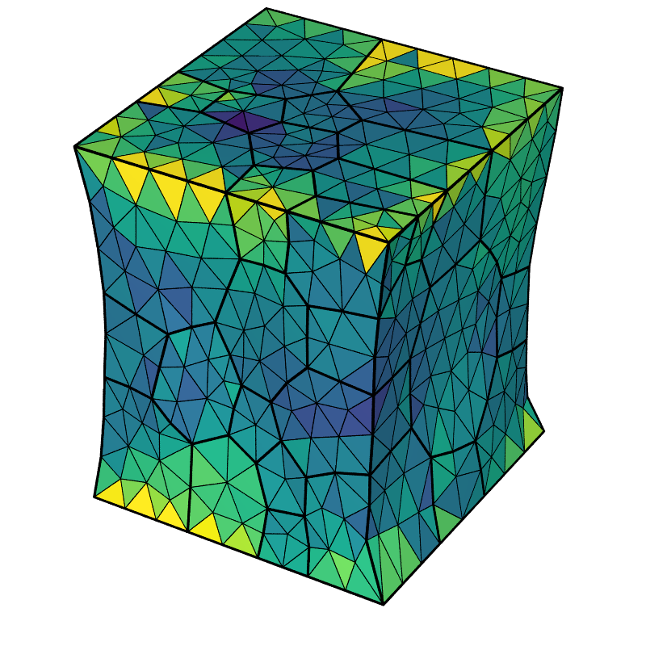

Neper-FEPX¶
简介¶
Neper是一款用于多晶体生成和网格划分的免费/开源软件包。 它可用于生成具有各种形态特性的多晶体，从非常简单的形态到涉及晶粒细分的复杂、多相或多尺度微结构。 生成的网格可以划分成适合有限元模拟的高质量网格。
FEPX是一款用于多晶塑性的有限元软件包，与Neper配合使用。 它可以通过一个可扩展的并行框架，对具有复杂微观结构的大型多晶聚集体的整体和局部力学行为进行建模。
可用版本¶
版本 |
平台 |
构建方式 |
模块名 |
|---|---|---|---|
4.6.1 |
|
源码 |
Neper/4.6.1-gcc-11.2.0 思源一号 |
1.3.0 |
|
源码 |
FEPX/1.3.0-gcc-11.2.0 思源一号 |
集群上的Neper和FEPX¶
思源一号上的Neper和FEPX¶
自定义编译Neper和FEPX¶
自安装依赖库¶
module load gcc
spack install nlopt
spack install povray
spack install gsl
spack install gmsh
思源一号上已部署所依赖的库及版本¶
nlopt/2.7.0-gcc-11.2.0-openblas
gmsh/4.8.4-gcc-11.2.0-hdf5-openblas
gsl/2.7.1-gcc-11.2.0
imagemagick/7.0.8-7-gcc-11.2.0
povray/3.7.0.8-gcc-11.2.0
openmpi/4.1.5-gcc-11.2.0
gcc/11.2.0
编译Neper和FEPX前导入所需的环境变量
module load nlopt/2.7.0-gcc-11.2.0-openblas
module load gmsh/4.8.4-gcc-11.2.0-hdf5-openblas
module load gsl/2.7.1-gcc-11.2.0
module load imagemagick/7.0.8-7-gcc-11.2.0
module load povray/3.7.0.8-gcc-11.2.0
module load openmpi/4.1.5-gcc-11.2.0
module load gcc/11.2.0
自定义编译Neper¶
git clone https://github.com/rquey/neper.git
cd ~/neper/src
mkdir build
cd build
cmake -DCMAKE_INSTALL_PREFIX=~/neper/build ..
cmake -DCMAKE_INSTALL_PREFIX_COMPLETION=~/completions ..
make
make install
可根据所需选择安装的目录，思源一号上的预编译版本安装目录如下：
cmake -DCMAKE_INSTALL_PREFIX=/dssg/opt/icelake/linux-centos8-icelake/gcc-11.2.0/neper-v4.6.1/build ..
cmake -DCMAKE_INSTALL_PREFIX_COMPLETION=/dssg/opt/icelake/linux-centos8-icelake/gcc-11.2.0/neper-v4.6.1/completions ..
自定义编译FEPX¶
unzip FEPX-1.3.0.zip
cd fepx-1.3.0/src
mkdir build
cd build
cmake -DCMAKE_INSTALL_PREFIX=~/fepx-v1.3.0 ..
make
make install
可根据所需选择安装的目录，思源一号上的预编译版本安装目录如下：
cmake -DCMAKE_INSTALL_PREFIX=/dssg/opt/icelake/linux-centos8-icelake/gcc-11.2.0/fepx-v1.3.0 ..
思源一号上使用预编译的Neper和FEPX¶
module load nlopt/2.7.0-gcc-11.2.0-openblas
module load gmsh/4.8.4-gcc-11.2.0-hdf5-openblas
module load gsl/2.7.1-gcc-11.2.0
module load imagemagick/7.0.8-7-gcc-11.2.0
module load povray/3.7.0.8-gcc-11.2.0
module load openmpi/4.1.5-gcc-11.2.0
module load gcc/11.2.0
export PATH=/dssg/opt/icelake/linux-centos8-icelake/gcc-11.2.0/neper-v4.6.1/build/bin:$PATH
export PATH=/dssg/opt/icelake/linux-centos8-icelake/gcc-11.2.0/fepx-v1.3.0/bin:$PATH
可将上述命令写入mysource.sh文件，每次仅需source mysource.sh即可调用
Step1-Create microstructure¶
neper -T -n 50 -reg 1 -morpho gg -o simulation
neper -V simulation.tess -datacellcol id -print Image_Polycrystal
运行完成后生成simulation.tess和Image_Polycrystal.png，如图1所示。 
Step2-Create mesh¶
neper -M simulation.tess -order 2 -part 4
neper -V simulation.tess,simulation.msh -dataelsetcol id -print Image_Mesh
运行完成后生成simulation.msh和Image_Mesh.png，如图2所示。 
Step-3 Apply material properties, BC and simulate;将 “simulation.config” 文件复制到当前文件夹¶
cp /dssg/opt/icelake/linux-centos8-icelake/gcc-11.2.0/fepx-v1.3.0/data/simulation.config ~
fepx
Step-4 Postprocess raw results¶
neper -S .
运行后当前文件夹生成.sim文件
step-5 Visualize the results¶
neper -V ../fepx_example.sim \
-simstep 2 \
-datanodecoo coo \
-dataelt1drad 0.004 \
-dataelt3dedgerad 0.0015 \
-datanodecoofact 10 \
-dataelt3dcol stress33 \
-dataeltscaletitle "Stress 33 (MPa)" \
-dataeltscale 0:850 \
-showelt1d all \
-cameraangle 13.5 \
-imagesize 800:800 \
-print 1_s33_deform
运行后生成文件1_s33_deform.png和1_s33_deform-scale3d.png，如图3所示 